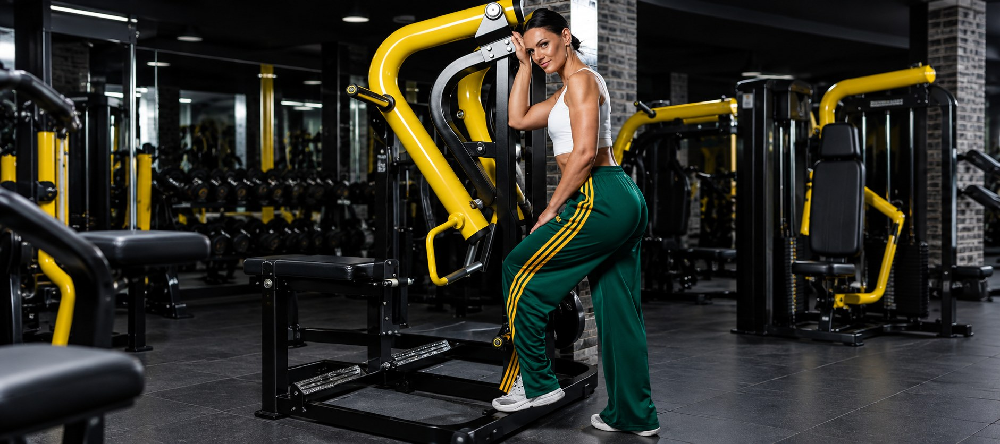
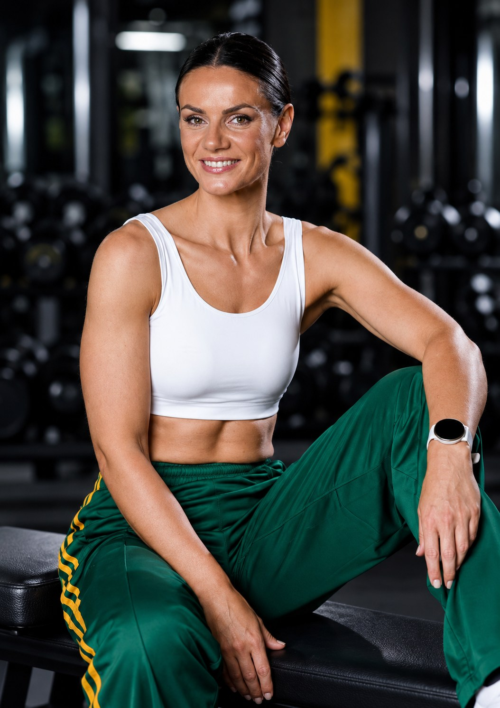
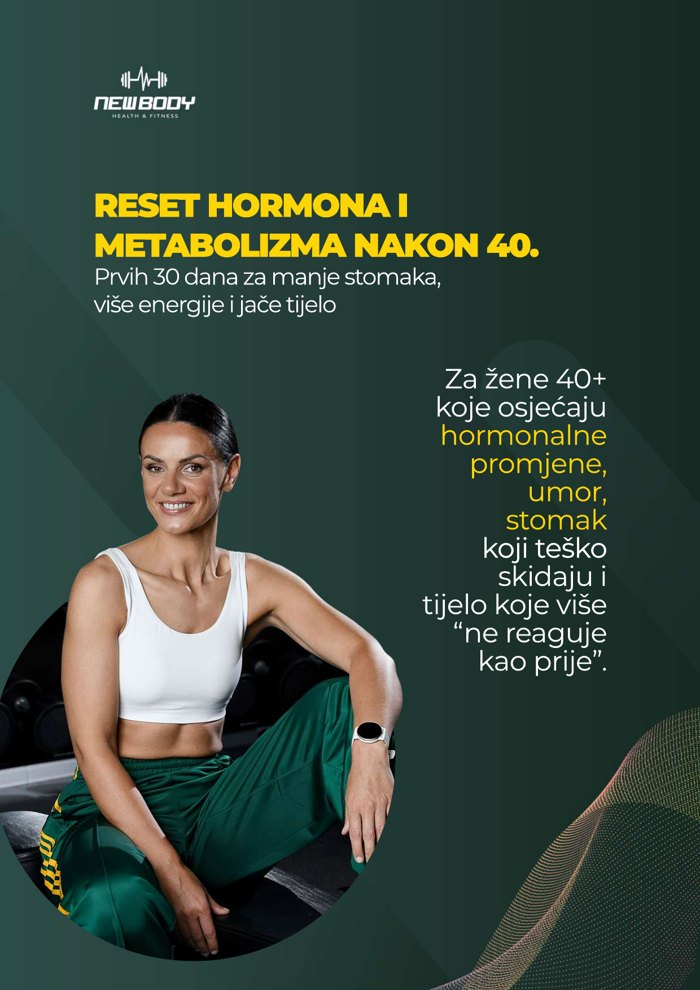

Treninzi za žene 40+
Za skidanje masnih naslaga sa stomaka, jačanje i očuvanje mišića.

Zvuči li ti poznato?
Nisi luda. I nisi “nedisciplinovana”. Tvoje tijelo je u hormonskoj tranziciji i traži drugačiji pristup: više snage, pametniju ishranu i manje iscrpljivanja.
Dobra vijest je da to ne znači još jednu strogu dijetu ni sate kardija. Kad počneš da jedeš dovoljno proteina, treniraš snagu nekoliko puta sedmično i vodiš računa o snu i stresu, tijelo ponovo počinje da sarađuje. Mišići postaju čvršći, stomak se smanjuje, a energija se vraća.
Ne treba ti zabrana. Treba ti kontrola.
Tu sam da ti pomognem
Za skidanje masnih naslaga sa stomaka, jačanje i očuvanje mišića.
Savjeti o ishrani koji pomažu u balansiranju hormona i ubrzanju metabolizma.
Kako se riješiti nadutosti, umora i problema sa zglobovima.
Realne strategije za zdravlje kostiju i ublažavanje simptoma perimenopauze.

O meni
Ovdje ćeš pronaći stručne savjete, treninge i praktične smjernice kako da se osjećaš snažno, zdravo i energično u svom tijelu.
Moj cilj je da ti pokažem kako možeš trenirati pametno, jesti bez stresa i konačno se riješiti tvrdoglavog stomaka, bez iscrpljujućih dijeta i previše kardija.

Besplatan vodič
Prvih 30 dana za manje stomaka, više energije i jače tijelo. Radiš sedmicu po sedmicu, bez gladovanja i bez iscrpljivanja.
Treniraj sa mnom
Kod kuće, bez skokova i bez iscrpljivanja.
Pusti snimak i treniraj zajedno sa mnom.
Kako funkcioniše
Na WhatsApp ili Viber. Ukratko mi napiši svoje ciljeve i šta te muči.
Plan ishrane prilagođen perimenopauzi i plan treninga snage, napravljen za tebe.
Bez gladovanja i bez iscrpljivanja, uz podršku da izdržiš 3 mjeseca, a ne 3 sedmice.
Rezultati
Prave žene, pravi rezultati. Bez gladovanja i bez sati kardija.
Fotografije i rezultati objavljeni su uz saglasnost klijentkinja. Rezultati se razlikuju od osobe do osobe.
Utisci
Dovoljno bi bilo da kažem FANTASTIČNO. Ne samo da sam izgubila 8 kg, što je duplo od planiranog, nego sam se i podmladila 8 godina. Nivo energije je neuporedivo veći nego prije tri mjeseca.
Nisam mogla ni da zamislim u snu da će sve ići tako lagano. Treninzi savršeni, hrana super, moje osjećanje fenomenalno, kile se fino smanjuju.
Jako se ponosim time, nisam 10 godina postigla toliko koraka, zahvaljujući tebi i tvom programu. Dobijam motivaciju i novi život!
Draga Biljo, baš sam zadovoljna promjenama. Imam više energije i snage. Napredak je vidljiv. Hvala puno za sve, samo naprijed!
Imam snage i energije dovoljno, nisam gladna, a onih „slojeva” je manje. Mislim da mi je ovo bila jedna od najvažnijih životnih odluka.
Vide se promjene na cijelom tijelu. Salo oko trbuha se topi, noge, ruke, sve postaje čvršće. Prijatelji su počeli komentarisati promjene, samopouzdanje mi raste.
Program
Kreiran isključivo za žene 40+ koje žele da smanje stomak, povrate energiju, očuvaju mišiće i uđu u menopauzu jake, a ne iscrpljene.
Ako se Viber nije otvorio, piši mi na +387 62 653 311.
Mjesto za dodatne pakete (npr. samo trening ili samo ishrana), u dogovoru sa Biljanom.
[CIJENA]Česta pitanja
[Odgovor u dogovoru sa Biljanom]
[Odgovor u dogovoru sa Biljanom]
[Odgovor u dogovoru sa Biljanom]
[Odgovor u dogovoru sa Biljanom]
[Odgovor u dogovoru sa Biljanom]